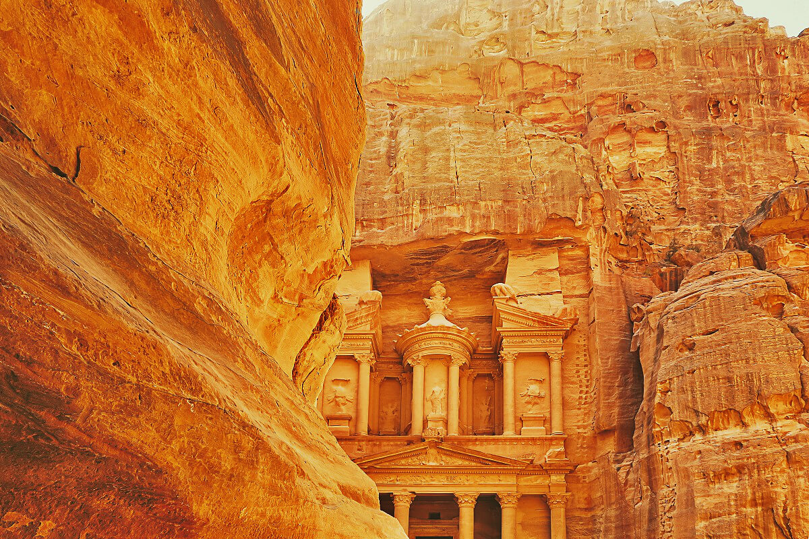
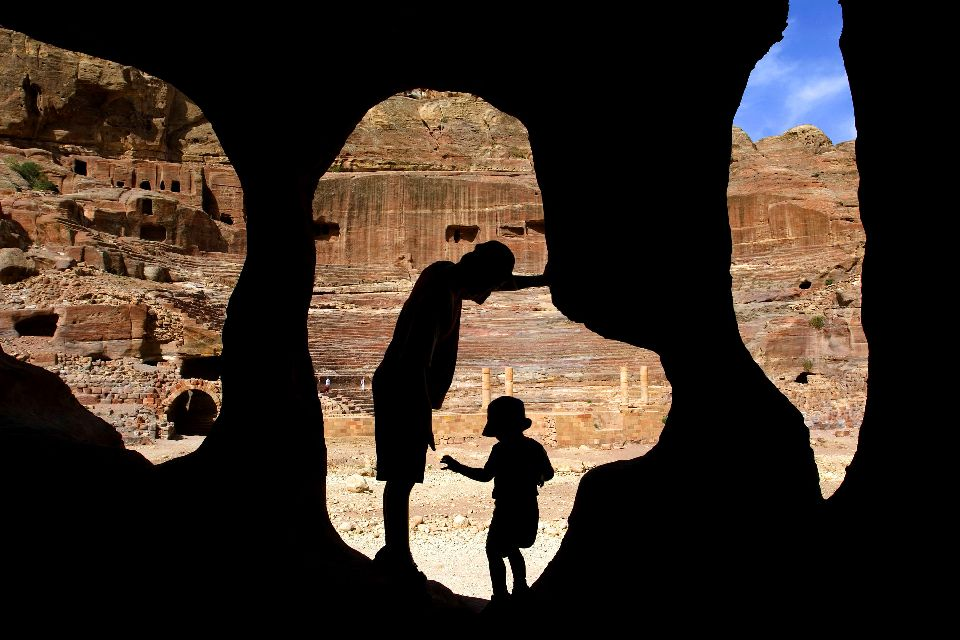
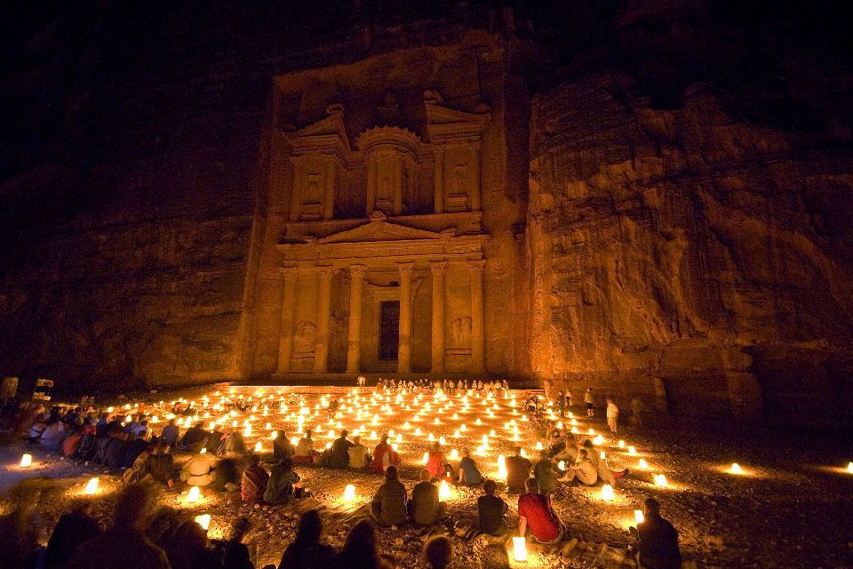

Petra
La cité de Pétra a été fondée par les Edomites au VIIIème siècle avant J-C. Elle a été abandonnée après plusieurs séismes et transformations des routes commerciales qui passent par elle. Depuis ce jour, de nombreuses personnes gardent sur “les choses à faire avant de mourir” la visite de cette cité mythique. Désormais, des centaines et milliers de touristes rêvent d’aller visiter la cité Pétra qui est parmis les merveilles que la trace humaine sur le monde, propose.
La cité de Pétra a été ajouté aux 7 nouvelles merveilles du monde en 2007 et à la liste du patrimoine mondial de l’UNESCO en 1985.

Cette cité ancestrale s’est fait d’ailleurs connaître par le célèbre film Indiana Jones et la dernière croisade. Le film a attiré les fans de la saga pour découvrir les lieux qui ont habité le tournage du film. Cependant, il faut d’abord passer par la ville d’Amman et passer une nuit à l’hôtel pour reprendre des forces après les heures d’avion. ll faudra ensuite 5 à 6 heures de marche pour atteindre la cité perdue. Il est plus intéressant de la visiter sur 2 jours donc le logement là-bas doit être absolument prévu. De plus, si vous souhaitez prolonger la dose de découverte vous pouvez toujours faire une randonné dans le désert ou encore l’exploration des dunes aux alentours. Vous devrez tout de même compter 4 à 5 heures de marche par jour avec une ou plusieurs jours en Bivouac.

Cette expérience originale et exclusive pourra plaire aux petits comme aux grands. Il faudra tout de même penser à acheter de grandes bouteilles d'eau pour toute la famille car il fait généralement très chaud et vous aurez de grandes difficultés à trouver des points d'eau potable.
Certains soirs vous pouvez avoir la chance d'assister à des cérémonies ou prières avec une ambiance particulière, magique et sacrée.